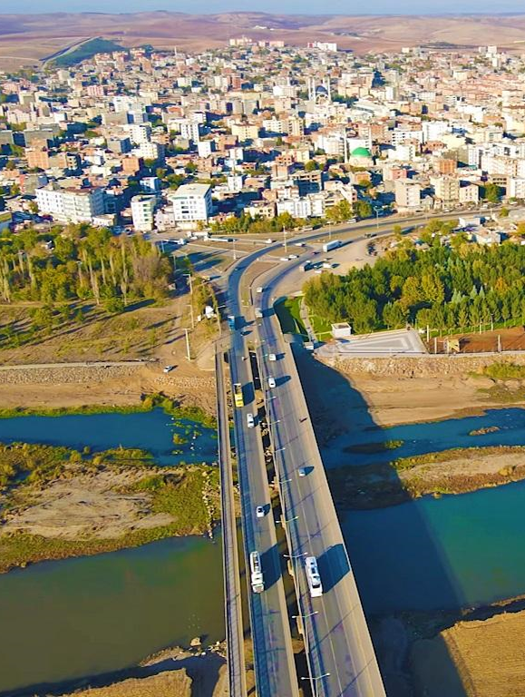

Aşağıda, yukarıda verilen ilçelerin görselleri bulunmaktadır.

BİSMİL

Diyarbakır Türkiye'nin Güneydoğu Anadolu Bölgesi'nde yer alan, dünyanın en eski şehirlerinden biri olan Diyarbakır'a ev sahipliği yapan tarihî bir ildir.
Merkez ilçesiyle birlikte 17 ilçesi bulunur. Ülkenin doğusundaki en kalabalık metropolüdür.
Diyarbakır tarihinin, önceleri M.Ö.3000 yılına kadar uzandığı bilinirken, son zamanlarda Çayönü kazıları ile yapılan araştırmalar sonucunda uygarlık geçmişinin M.Ö.7500 yıllarına kadar uzandığı belirlenmiştir. Diyarbakır ve çevresinde Hurriler, Mitanniler, Hititler, Asurlar, Medler, Persler, Büyük İskender, Romalılar, Bizanslılar, Araplar, Selçuklular ve Osmanlılar hüküm sürmüştür.
1990 sayımına göre toplam nüfusu 99.662 olup, 39.834’ü ilçe merkezinde, 59.828’i köylerde yaşamaktadır. Merkez bucağına bağlı 40, Tepe bucağına bağlı 23, Yukarısalat bucağına bağlı 25 köyü vardır. Yüzölçümü 1748 km2 olup, nüfus yoğunluğu 57’dir. İlçe toprakları, Dicle Irmağının meydana getirdiği çöküntü alanında yer alır. Kuzeyini Yumru Dağı engebelendirir. İlçe topraklarını Kuruçay, Pamuk Çay ve Batman Çayı sular.
Zengin bir geçmişe sahip olan Eğil ilçesi tarih içinde de önemli bir yer işgal etmiştir. Asur Kalesi’nin adından da anlaşılabileceği gibi Asurluların da ötesine ulaşan bir geçmişi vardır
Cumhuriyetin ilk yıllarında Diyarbakır merkeze bağlı büyük bir köy olan Çınar 23 Haziran 1937 yılında, 3223 sayılı kanun ile bağımsız ilçe haline gelmiştir. Önceleri adı "Melkis" olup merkezi daha sonra "Hanakpınar" mahallesi yakınlarına taşınan ilçenin, 1937'den önce adı "Akpınar" ve "Hanakpınar" olarak bilinmekteydi.
Aşağıda, yukarıda verilen ilçelerin görselleri bulunmaktadır.
Diayarbakır da gezilip görülecek bir kaç yer.
Anadolu'nun en eski camisidir.639 yılında Diyarbakır'a egemen olan müslüman Araplar tarafından şehrin merkezindeki en büyük mabedin (Martoma Kilisesi) camiye çevrilmesiyle oluşturulmuştur.
On Gözlü Köprü, Dicle Köprüsü, Silvan Köprüsü ve Mervani Köprüsü olarak dört ayrı isimle bilinen ihtişamlı köprü, Mardin Kapısının 3.km batısında yer almaktadır. Köprünün tarihçesi hakkında bazı kaynaklarda 6.yüzyılda I.Anastasias Döneminde yapıldığı bilgisine ulaşılmaktadır. Köprü zaman içerisinde şehri kuşatan kuvvetler tarafından yıktırılmış, daha sonradan yeniden onarılmıştır.
Diyarbakır’da yer alan ve tarihi 1572/1575 yıllarına kadar uzanan Hasan Paşa Hanı, burada yer alan kitabeye göre ilin Osmanlılar tarafından alınması üzerine o dönemde vali olan Sokullu Mehmet Paşa’nın oğlu Vezirzade Hasan Paşa tarafından yaptırıldığı bilinmektedir. Diyarbakır’ın merkez ilçelerinden biri olan Sur’da yer alan han, tarih boyunca geçirdiği restorasyonlardan sonra bugün hala tarihi havasını korumaya devam etmektedir.
Sezai Karakoç,
Ahmed Arif,
Ozan Deniz Sarıtop,
Yılmaz Odabaşı,
A. Hicri İzgören,
Cahit Sıtkı Tarancı
Aşağıda da iki şairimizin örneği verilmiştir.
Ahmet Arif Kimdir?
Ahmet Arif Türk şair ve aynı zamanda gazetecidir. Doğum adı Ahmet Hamdi Önal olarak bilinmektedir. Eserlerini toplumcu gerçekçilik anlayışı ile yazan şairdir. Cumhuriyet dönemi Türk edebiyatının en önemli şairleri arasındadır.
Ahmet Arif'in Kısaca Hayatı
Ahmet Arif 23 Nisan 1927'de Diyarbakır'ın Hançepek semtinde dünyaya geldi. Çocukluğunun ve gençliğinin büyük kısmı Diyarbakır'da geçti. Ahmet Arif henüz bebek iken annesi Sare hanımı kaybetti. Bu yüzden hiçbir zaman annesini tanıyamadı. Ahmet Arif toplam da 8 kardeştir. Kardeşlerinin arasında en küçüğüdür. Ahmet Arif okuma yazmayı ilkokuldan önce bir ana okulundan öğrenmiştir. Ahmet Arif ilkokul, ortaokul ve lise eğitimini Diyarbakır'da tamamladı. Diyarbakır Lisesi mezunu olan Ahmet Arif lise hayatında şiirler yazmaya başladı.
Üniversite eğitimi için Ankara Üniversitesi Tarih ve Coğrafya Fakültesi'ne kaydolmuştur. Buradan Felsefe bölümünü tamamlayamamıştır. Üniversite hayatı boyunca 2 kez soruşturma açılmış ve tutuklanmıştır. Felsefe bölümünde iken yazmış olduğu çeşitli yazılar ve şiirleri kendine has lirizmi ile yazmıştır. Kendine has tarzı olan Ahmet Arif Türk edebiyatında önemli bir yer edinmeyi başarmıştır. Yazmış olduğu ilk şiir Seçme Demeti Şiirler dergisinde yayınlandı. Telif hakkı olarak dergi Ahmet Arif'e 10 lira ücret ödedi. Ahmet Arif yaşadığı coğrafyadan ötürü Zazaca, Kürtçe ve Arapça'yı kısa süre içerisinde öğrendi.
Askerliğini ise İstanbul'un Riva semtinde yapmıştır. Askerden geldikten sonra çeşitli gazetelerde çalışmıştır. İlk kitabını 1968 yılında çıkarmıştır. Hasretinden Prangalar Eskittim adlı kitabı oldukça beğenildi ve yüksek tirajlara ulaşmıştır. Ardından yine aynı isimle bir de şiir yazmıştır. Kendi sesi ile seslendirmiş olduğu bu şiiri 20 binden fazla alıcıya ulaşmıştır.
Cahit Sıtkı Tarancı
4 Ekim 1910'da Diyarbakır'ın Camii kebir mahallesinde doğdu. Asıl adı "Hüseyin Cahit" -tir. "Nümune-i Terakki-i Hamidi Mektebi-i İptidaisinde başladığı İlk öğrenimini "Mektebi-i Sultani’ nin iptidai kısmında tamamladı. İlk okuldan sonra İstanbul'a gelerek, Orta öğrenimine Kadıköy'de Saint Joseph Lisesi'nde ve Galatasaray Lisesi'nde devam etti. Ziya Osman Saba ile dostluğu bu yıllarda sıra arkadaşlığı olarak başlamıştır. Liseden sonra mülkiye mektebine gitti ancak başarılı olamadı. Yüksek ticaret okuluna yazıldı, bu arada cumhuriyet gazetesinde hikayeleri çıkmaya başlamıştı. Buradaki öğrenimini tamamlamadan kazandığı parayla Paris’te öğrenim görmeye gitti. İkinci Dünya Savaşı'nın çıkması üzerine yurda döndü. Askerliğini yaptıktan sonra Anadolu Ajansı ve Çalışma Bakanlığı'nda çevirmen olarak çalıştı. 1953 Aralık ayında ağır bir hastalığa yakalandı. Türkiye'de tedavisi sonuç vermeyince Viyana'ya götürüldü. 13 Ekim 1956'da, 46 yaşında, zatülcenp hastalığından, orada hastanede öldü. Cenazesi 26 ekim tarihinde Ankara'da toprağa verildi. Ona göre şiir, kelimelerle güzel şekiller kurma sanatıdır. Şiirde ses, anlam ve biçim bütünlüğü arar. Vezin ve kafiyeden kopmamış; ama ölçülü veya serbest, her türlü şiirin güzel olabileceği inancını taşımıştır. Açık ve sade bir üslubu vardır. Çoğu gerçeğe bağlı olan mecazları, derin, karışık ve şaşırtıcı değildir. Uzak çağrışımlara ve hayal oyunlarına pek itibar etmemiştir. Zaman zaman bazı imaj ve sembollere başvurmuştur. Şiirlerinde en çok yaşama sevinci ve ölüm temalarına yer vermiş, ama hep ölümün üstüne gitmiştir. Ayrıca yitik aşklar, mutlu sevdalar, yalnızlık,kaçış, yaşadığı bohem hayatın buruklukları, çocukluk özlemi de şiirlerine konu olmuştur. "Sanat için sanat" ilkesine bağlı kalmıştır. Batıya yönelen şiirimizde öncelikli bir yeri vardır, şiirinde divan etkisi yoktur, daha çok halk şiirinden yararlandığı söylenilebilir (Karacaoğlan’a yaklaşan deyişleriyle). İlk şiirlerinde fransız ozanların etkileri görülür.